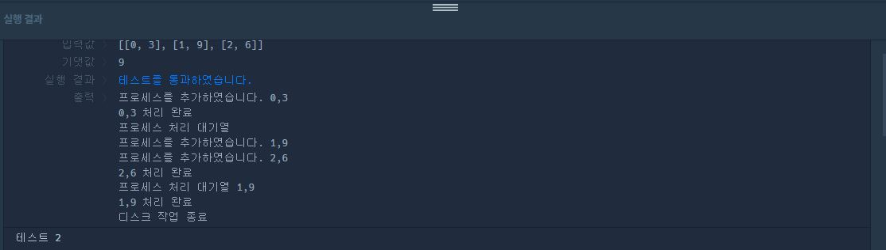

I 숫자 --> 주어진 숫자를 que에 삽입합니다.
D 1 --> 최댓값을 삭제합니다.
D -1 --> 최솟값을 삭제합니다.
배열이 비어있으면 [0,0] 그렇지 않으면 [최댓값,최솟값]을 return 해줍니다.
먼저 que 배열과 answer 배열을 생성해줍니다.
let que = [];
let answer = [];
operations 배열을 탐색하여 조건에 따라 que에 명령을 내립니다.
이때 먼저 operation의 원소들의 공백을 제거하여 명령어를 다루기 쉽게 가공해줍니다.
I 숫자 --> I숫자
D -1 --> D-1
D 1 --> D1
str의 0번째 인덱스의 값이 I라면 그 뒤의 부분을 잘라서 정수형으로 변경해준 뒤 que 배열에 push 해줍니다.
명령어의 첫번째 부분이 D일 경우 두번째 부분이 '1'이면 최댓값을 제거하고 '1'이 아닌 경우 최솟값을 제거해줍니다('-'이면)
조건문들이 통과한 후에는 que 배열의 최댓값과 최솟값을 answer배열에 각 인덱스에 넣어줍니다.
que가 비어있을 경우에 answer배열도 비어있을 것. 그러므로 que의 길이가 0인 경우 문제 조건에 따라 [0,0]을 넣어줍니다.
// 1.
operations.forEach((v,i) => {
// 2.
let str = v.replaceAll(' ','');
// 3.
if(str[0] === 'I') {
let input = parseInt(str.substring(1));
que.push(input);
console.group(`que배열에 값 ${input} 입력`);
console.log(que);
console.groupEnd();
}
// 4.
else if(str[0] === 'D') {
if(str[1] === '1') {
let output = que.indexOf(answer[0]);
console.group(`최댓값 (${que[output]}) 삭제`);
que.splice(output,1);
console.log(que);
console.groupEnd();
} else{
let output = que.indexOf(answer[1]);
console.group(`최솟값 (${que[output]}) 삭제`);
que.splice(output,1);
console.log(que)
console.groupEnd();
}
}
// 5.
answer[0] = Math.max(...que);
answer[1] = Math.min(...que);
});
// 6.
answer = que.length === 0? [0,0]: answer;
console.log(answer);
return answer;
1. 현재시간 (진행중인 작업이 끝난 후의 시간)
2. 각 프로세스마다 요청 시간으로 부터 작업소요 시간이 얼마인지 넣어줄 배열
3. 프로세스처리 대기열을 표현하는 배열
4. solution 함수 파라미터 배열의 길이
function solution(jobs) {
// 1
let time = 0;
// 2
let answer = [];
// 3
let arr = [];
// 4
let len = jobs.length;
// 진행중인 프로세스가 없을 때 프로세스 처리 요청을 가장 먼저 한 녀석을 소요시간에 상관없이 처리해야 하므로
// 처리 요청 시간 순으로 정렬해줌.
jobs.sort((a,b) => a[0]-b[0]);
let i = 0;
while(true){
// 프로세스 요청 시간이 time 보다 작거나 같으면 처리 대기열에 넣기.
// 여러 개 넣어두고 그 속에서 정렬하고 다시 작업을 받고 이러는 순서임
if(i<len && jobs[i][0] <= time){
console.log(`프로세스를 추가하였습니다. ${jobs[i]}`);
arr.push(jobs[i++]);
// process 처리 대기열에서 소요시간 순으로 정리함
arr.sort((a,b) => a[1]-b[1]);
continue; // 첫번째 작업 소요시간 이전에 요청된 작업목록을 모두 대기열에 넣기 위함.
}
// 작업 대기열에 아무것도 없을 경우
if(!arr.length) {
console.log(`대기열에 처리할 프로세스가 없습니다.`);
time = jobs[i][0]; // 처리할 것이 없기 때문에 첫 작업요청 시간을 time에 저장.
} else { // 작업대기열에 작업할 것이 있을 경우 정렬되어 있기 때문에 맨 앞에 것 부터 꺼내서 처리함.
let progress = arr.shift();
console.log(`${progress} 처리 완료`);
//요청으로부터 소요시간 = (현재 시간 - 작업요청시간 + 작업소요시간)
answer.push((time - progress[0] + progress[1]));
time += progress[1];
}
// 작업 대기열에 아무것도 없고, 작업 목록에 있는 모든 요청을 처리한 경우 (i가 jobs.length와 동일함)
if(!arr.length && i==len){
console.log('디스크 작업 종료');
break;
}
console.log(`프로세스 처리 대기열 ${arr}`);
}
return Math.floor(answer.reduce((acc,cur)=> acc+cur)/answer.length);
}
